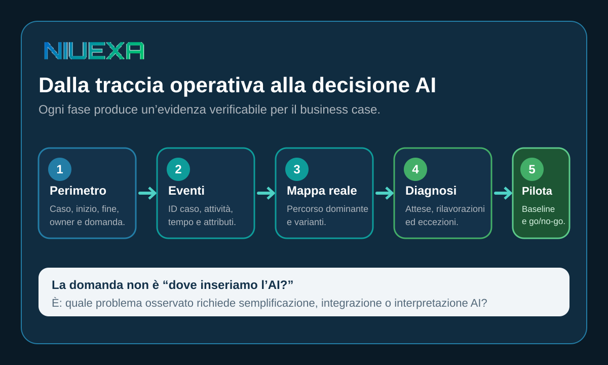

Risposta rapida: che cos’è il process mining?
Il process mining usa le tracce dei sistemi aziendali per ricostruire come un processo viene eseguito davvero. Collegando ogni evento a un caso, un’attività e un momento, rende visibili percorsi frequenti, varianti, attese, rilavorazioni ed eccezioni. Per una PMI può essere una diagnosi circoscritta che rende verificabile la scelta del primo workflow AI.
La procedura racconta il percorso previsto; i dati raccontano quello reale
Una procedura può dire: richiesta, verifica, approvazione, esecuzione. Nella pratica alcune richieste tornano indietro perché manca un allegato, altre attendono un responsabile, altre ancora passano da email, fogli di calcolo e gestionale. Se si automatizza solo il diagramma ideale, l’AI incontra eccezioni che il progetto non aveva considerato.
L’IEEE Task Force on Process Mining distingue tra process discovery, che estrae un modello dagli eventi, e conformance checking, che confronta log e modello per osservare le deviazioni. Per la selezione di un caso d’uso AI la distinzione è pratica: prima scopri le varianti; poi decidi quali sono accettabili, quali indicano spreco e quali richiedono una regola o un controllo umano.
Il process mining non sostituisce le interviste. I log mostrano che cosa è accaduto nei sistemi, ma non spiegano sempre perché. Una diagnosi credibile combina eventi, documentazione e confronto con chi svolge il lavoro. Se un passaggio avviene fuori sistema, va dichiarato come area non osservata, non interpretato come inesistente.
I dati minimi: caso, attività e timestamp
ProcessMining.org descrive un event log tradizionale con tre elementi essenziali: identificativo del caso, attività e timestamp. Il “caso” è l’unità che attraversa il processo: un ordine, un ticket, una pratica o una richiesta di preventivo. L’attività indica il passaggio eseguito. Il timestamp permette di ordinare gli eventi e misurare le attese.
| Campo | Domanda a cui risponde | Esempio |
|---|---|---|
| ID caso | Quali eventi appartengono alla stessa pratica? | Ordine 10482 |
| Attività | Quale passaggio è avvenuto? | Verifica disponibilità |
| Timestamp | Quando è avvenuto e quanto si è atteso? | 28/08, 10:42 |
| Attributi utili | Chi, con quale esito, canale o costo? | Owner, reparto, esito, valore |
La qualità dell’analisi dipende dalla qualità semantica del log. Due sistemi possono usare nomi diversi per la stessa attività o lo stesso stato per eventi diversi. Prima di disegnare la mappa servono un dizionario dei campi, regole di esclusione, controllo dei duplicati e una verifica a campione con il process owner. Se i dati personali non sono necessari alla domanda, vanno esclusi o minimizzati.
Un metodo leggero in cinque passaggi

1. Delimita il processo e la decisione
Non partire da “analizziamo tutto l’ERP”. Scegli un inizio, una fine, un owner e una domanda. Per esempio: perché alcune richieste di assistenza superano la soglia interna? Oppure: dove si accumulano rilavorazioni tra preventivo e ordine? Un perimetro chiaro impedisce di confondere attività adiacenti con lo stesso processo.
2. Costruisci un estratto verificato
Raccogli un periodo rappresentativo e documenta origine, campi, filtri e trasformazioni. Controlla casi senza ID, timestamp incoerenti, eventi duplicati e attività troppo generiche. Fai seguire manualmente alcuni casi dall’inizio alla fine: è il modo più rapido per trovare errori di correlazione.
3. Ricostruisci percorso dominante e varianti
La mappa non serve a produrre il diagramma più complesso. Deve separare il flusso dominante dalle varianti che muovono tempo, costo o rischio. Per ciascuna variante rileva frequenza, durata, esito e passaggi ripetuti. Una variante rara ma ad alto impatto può meritare più attenzione di una deviazione frequente e innocua.
4. Diagnostica attese, rilavorazioni ed eccezioni
Separa il tempo di lavorazione dal tempo di attesa. Evidenzia i passaggi che tornano indietro, i trasferimenti tra sistemi, le approvazioni prive di SLA e i casi che richiedono correzione manuale. Valida ogni ipotesi con chi esegue il processo: il log è una prova, non una spiegazione completa.
5. Scegli l’intervento e fissa la baseline
Non ogni problema richiede AI. Una regola, un campo obbligatorio o un’integrazione deterministica possono essere soluzioni migliori. L’AI è adatta quando deve interpretare testo, classificare casi, estrarre informazioni o supportare una decisione entro limiti definiti. Prima del pilota salva volumi, tempi, tasso di rilavorazione, eccezioni e qualità accettata: saranno il confronto per il go/no-go.
Dalla diagnosi alla decisione: quattro interventi possibili
| Segnale osservato | Intervento da valutare | Controllo |
|---|---|---|
| Dati mancanti all’ingresso | Semplificare modulo e validazioni | Completezza prima dell’invio |
| Trasferimento manuale tra sistemi | Integrazione deterministica | Idempotenza e riconciliazione |
| Testo non strutturato da interpretare | Classificazione o estrazione AI | Campione verificato e soglia |
| Eccezioni ad alto impatto | Supporto AI con approvazione umana | Escalation, log e responsabilità |
Questa matrice evita il bias “AI per ogni problema”. Il risultato della discovery è un backlog di interventi con evidenza, non un elenco di funzionalità. La priorità combina volume, impatto, fattibilità dei dati, reversibilità e disponibilità di un owner.
Per confrontare due candidati, usa la stessa scheda: problema osservato, frequenza, tempo perso, costo dell’errore, quota di casi standard, dati disponibili e rischio dell’azione. Aggiungi l’alternativa senza AI e il criterio di uscita. In questo modo il management può scegliere un pilota piccolo ma informativo, invece di premiare il processo più visibile o il tool presentato meglio.
Checklist prima di avviare un pilota
- Inizio, fine, caso e owner del processo sono definiti.
- La domanda decisionale è esplicita e non coincide con “usare l’AI”.
- Origine, significato e qualità dei campi sono documentati.
- Il percorso dominante e le varianti rilevanti sono validati con gli operatori.
- Tempo di attesa e tempo di lavorazione sono separati.
- La baseline include volume, durata, rilavorazioni, eccezioni ed esito accettato.
- È stato verificato se una regola o integrazione basta senza AI.
- Il pilota ha criteri di accettazione, fallback e owner del go/no-go.
Fonti e perimetro
Le definizioni di process discovery e conformance checking sono allineate alla IEEE Task Force on Process Mining. La struttura minima degli eventi e le note sui formati derivano dalla guida Event Data for Process Mining. Il metodo in cinque passaggi, la matrice decisionale e la checklist sono una guida operativa Niuexa. Non costituiscono una garanzia di ROI né una valutazione legale, privacy o cybersecurity.
FAQ sul process mining per PMI
Che cos’è il process mining?
È l’analisi dei dati evento prodotti dai sistemi aziendali per ricostruire, confrontare e migliorare il processo realmente eseguito.
Quali dati servono per iniziare?
Almeno ID del caso, attività e timestamp. Owner, esito, canale e costo rendono la diagnosi più utile.
Serve un grande progetto software?
No. Una PMI può partire da un processo circoscritto e da un estratto controllato, verificando definizioni e qualità.
Come aiuta a scegliere un’automazione AI?
Rende visibili volumi, varianti, attese, rilavorazioni ed eccezioni, così la priorità parte da una baseline e non da impressioni.